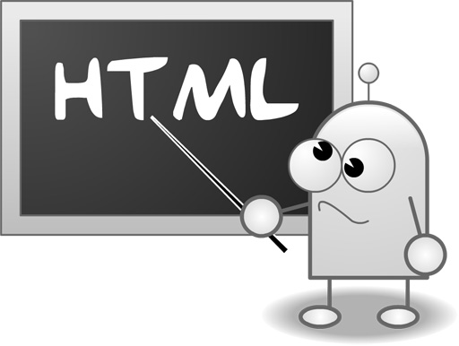

概要
この文書は、HTML/CSSの記述形式とスタイル規則を定義します。コラボレーションとコード品質を向上させ、基盤インフラストラクチャをサポートすることを目的としています。HTML/CSSファイル（GSSファイルを含む）に適用されます。コード品質が維持可能であれば、ツールによる難読化、圧縮、結合が適切に行われます。

スタイル規則
プロトコル
埋め込みリソースのプロトコルヘッダーは省略して記述する
- 画像、メディアファイル、スタイルシート、スクリプトなどのURLのプロトコルヘッダー宣言（http:、https:）は省略します。これら2つの宣言でないURLは省略しません。
- プロトコルの宣言を省略してURLを相対アドレスにすることで、コンテンツの混在問題を防ぎ、小さなファイルの重複ダウンロードを防ぎます。
<!-- 不推荐 -->
<script src="http://www.google.com/js/gweb/analytics/autotrack.js"></script>
<!-- 推荐 -->
<script src="//www.google.com/js/gweb/analytics/autotrack.js"></script>
/* 不推荐 */
.example {
background: url(http://www.google.com/images/example);
}
/* 推荐 */
.example {
background: url(//www.google.com/images/example);
}
整形規則
インデント
インデントはスペース2つです。
大文字と小文字
小文字のみを使用します。
行末のスペース
行末の空白を削除します。
メタデータ規則
エンコーディング
BOMなしのUTF-8エンコーディングを使用します。
エディターは、バイトオーダーマークなしのUTF-8エンコーディング形式で記述してください。
HTMLテンプレートとファイルでは、<meta charset="utf-8"> でエンコーディングを指定します。スタイルシートのエンコーディングを指定する必要はありません。デフォルトでUTF-8になります。
（エンコーディングとその指定方法の詳細については、以下を参照してください。Character Sets & Encodings in XHTML, HTML and CSS。）
コメント
書いたコードを可能な限り説明してください。
コメントを使用してコードを説明します：何が含まれているか、目的は何か、何ができるか、なぜその解決策を使用するのか、それとも単に好みなのか。
（この規則は任意です。すべてのコードを十分に説明する必要はありません。HTMLとCSSのコードを肥大化させる可能性があります。これはプロジェクトの複雑さに依存します。）
アクションアイテム
TODOを使用して、やるべきことやアクションアイテムをマークします。
TODOのみを使用してToDo項目を強調します。@@ などの他の一般的な形式は使用しないでください。
連絡先（ユーザー名またはメールアドレスのリスト）を括弧で囲んで追加します。例：TODO(contact)。
コロンの後にアクションアイテムの説明などを追加できます。例：TODO: アクションアイテムの説明。
{# TODO(cha.jn): 重新置中 #}
<center>Test</center>
<!-- TODO: 删除可选元素 -->
<ul>
<li>Apples</li>
<li>Oranges</li>
</ul>
HTMLコードのスタイル規則
ドキュメントタイプ
HTML5標準を使用してください。
HTMLコードの妥当性
可能な限り妥当なHTMLコードを使用してください。
妥当なHTMLコードを記述してください。そうしないと、パフォーマンスの向上は困難です。
このようなツールを使ってW3C HTML validatorテストを実施します。
HTMLコードの妥当性は重要な品質の指標であり、HTMLコードが正しく使用されることを保証します。
<!-- 不推荐 --> <title>Test</title> <article>This is only a test. <!-- 推荐 --> <!DOCTYPE html> <meta charset="utf-8"> <title>Test</title> <article>This is only a test.</article>
セマンティクス
HTMLの各要素の用途に応じてそれらを使用します。
要素（しばしば「タグ」と誤って呼ばれることもあります）を使用する際は、なぜそれを使用するのか、そしてそれが正しいかどうかを理解してください。例えば、見出し要素で見出しを、p 要素で段落を、a 要素でアンカーを構築します。
HTMLの各要素をその用途に応じて使用することは重要です。ドキュメントのアクセシビリティ、再利用性、コード効率などの問題に関係します。
<!-- 不推荐 --> <div onclick="goToRecommendations();">All recommendations</div> <!-- 推荐 --> <a href="recommendations/index.html">All recommendations</a>
マルチメディアのフォールバック
マルチメディアには代替コンテンツを提供してください。
画像、ビデオ、canvas を介したアニメーション要素などのマルチメディアについては、必ず代替手段を提供してください。画像には意味のある代替テキスト（alt）を使用し、ビデオとオーディオには文字起こしとキャプションを提供します。
代替コンテンツの提供は重要です。理由：視覚障害のあるユーザーに、その画像が何に関するものかを alt 属性を使用して伝えるためのヒントとなるテキストを提供し、ビデオやオーディオの内容を理解できなかった可能性のあるユーザーにヒントを提供します。
（画像の alt 属性は冗長になる場合があります。CSSですぐに実現できないための装飾としてのみ画像を使用する場合は、代替テキストは不要で、alt="" と記述できます。）
<!-- 不推荐 --> <img src="spreadsheet.png.html"> <!-- 推荐 --> <img src="spreadsheet.png.html" alt="电子表格截图">
関心の分離
プレゼンテーションと動作を分離します。
構造（マークアップ）、プレゼンテーション（スタイル）、および動作（スクリプト）を厳密に分離し、これら3つの間の相互作用を最小限に抑えるように努めます。
ドキュメントとテンプレートがHTML構造のみを含むことを確認し、すべてのプレゼンテーションをスタイルシートに、すべての動作をスクリプトに配置します。
さらに、スクリプトとスタイルシートがドキュメントとテンプレート内で接触する範囲を最小限にします。つまり、外部リンクを減らします。
プレゼンテーションと動作を分離して維持することは非常に重要です。HTMLドキュメントの構造やテンプレートを変更する方が、スタイルシートやスクリプトを更新するよりもコストがかかるためです。
<!-- 不推荐 --> <!DOCTYPE html> <title>HTML sucks</title> <link rel="stylesheet" href="base.css.html" media="screen"> <link rel="stylesheet" href="grid.css.html" media="screen"> <link rel="stylesheet" href="print.css.html" media="print"> <h1 style="font-size: 1em;">HTML sucks</h1> <p>I’ve read about this on a few sites but now I’m sure: <u>HTML is stupid!!1</u> <center>I can’t believe there’s no way to control the styling of my website without doing everything all over again!</center> <!-- 推荐 --> <!DOCTYPE html> <title>My first CSS-only redesign</title> <link rel="stylesheet" href="default.css.html"> <h1>My first CSS-only redesign</h1> <p>I’ve read about this on a few sites but today I’m actually doing it: separating concerns and avoiding anything in the HTML of my website that is presentational. <p>It’s awesome!
エンティティ参照
エンティティ参照を使用しないでください。
—、”、☺ などのようなエンティティ参照を使用する必要はありません。チーム間で使用するファイルとエディターが同じエンコーディング（UTF-8）であることを前提としています。
HTMLドキュメントで特別な意味を持つ文字（例えば
<
と
&
）は例外です。なお、「不可視」の文字（例えばno-breakスペース）も例外です。
<!-- 不推荐 --> 欧元货币符号是 “&eur;”。 <!-- 推荐 --> 欧元货币符号是 “€”。
オプションのタグ
オプションのタグは省略します（任意）。
ファイルサイズの最適化と検証のために、オプションのタグを省略することを検討できます。どのタグがオプションかは、以下を参照してください。HTML5 specification。
（この方法には、より正確な仕様の策定が必要になる場合があり、多くの開発者の見解もさまざまです。一貫性と簡潔さを考慮すると、すべてのオプションタグを省略することが必要です。）
<!-- 不推荐 -->
<!DOCTYPE html>
<html>
<head>
<title>Spending money, spending bytes</title>
</head>
<body>
<p>Sic.</p>
</body>
</html>
<!-- 推荐 -->
<!DOCTYPE html>
<title>Saving money, saving bytes</title>
<p>Qed.
type 属性
スタイルシートとスクリプトのタグでは type 属性は
type
省略します。
スタイルシート（CSSを使用しない場合を除く）とスクリプト（JavaScriptを使用しない場合を除く）のタグでは type 属性は
type
記述しません。
HTML5ではデフォルトの
type
ために
text/css
と
text/javascript
型であるため、指定する必要はありません。古いブラウザーでもサポートされています。
<!-- 不推荐 --> <link rel="stylesheet" href="//www.google.com/css/maia.css" type="text/css"> <!-- 推荐 --> <link rel="stylesheet" href="//www.google.com/css/maia.css"> <!-- 不推荐 --> <script src="//www.google.com/js/gweb/analytics/autotrack.js" type="text/javascript"></script> <!-- 推荐 --> <script src="//www.google.com/js/gweb/analytics/autotrack.js"></script>
HTMLコードの書式規則
各ブロック要素、リスト要素、またはテーブル要素はそれぞれ1行に配置し、各子要素は親要素に対してインデントします。
要素のスタイルとは無関係に（as CSS allows elements to assume a different role per
display
property）、ブロック要素、リスト要素、またはテーブル要素を新しい行に配置します。
また、ブロック要素、リスト要素、またはテーブル要素の子要素をインデントする必要があります。
（リスト項目の左右に空のテキストノードの問題が発生した場合は、すべての
li
li 要素を1行に配置してみてください。）
<blockquote>
<p><em>Space</em>, the final frontier.</p>
</blockquote>
<ul>
<li>Moe
<li>Larry
<li>Curly
</ul>
<table>
<thead>
<tr>
<th scope="col">Income
<th scope="col">Taxes
<tbody>
<tr>
<td>$ 5.00
<td>$ 4.50
</table>